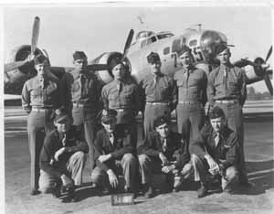
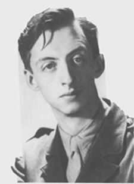
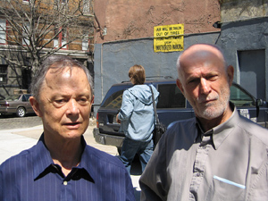

NEIL DERRICK & EDWARD FIELD
photo by David Alexander
"Working in the typing pool of an advertising agency,
one day the supervisor assigned the typewriter next to
me to a new temp, a sturdy, intelligent young man from
California. It was a case of immediate attraction
between WASP and Jew."
|

WWII B-17 BOMBER CREW WITH ME IN FRONT ROW, SECOND FROM
RIGHT
"My introduction to Modern Poetry came on an airbase in the English Midlands,
from which I was flying bombing missions over Germany. After an exhausting
daylong flight I would go to the Officers Club on the base and drink whiskey sours to
unwind. It was there that I met my first poet, a ground officer named...."

"The perfect aesthete, Dunstan had a
wonderful dome of a head....He used the
word 'gay' with abandon in his poems,
though it was still not in general use...."
